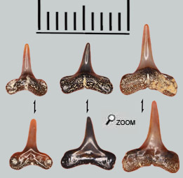
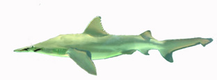

|
  |
||
 |
|
||
De petites piques...  Historiquement le genre Isogomphodon a d'abord été reconnu sous le nom Aprionodon. Les dents supérieures sont assez faciles à caractériser. Ces sont de fines pointes. Les tranchants s'allongent loin sur les racines et forment de petits renflements qui débordent sur la face intérieure des racines mais qui ne se développent jamais au point de constituer des vraies cuspides. Les racines sont légèrement dissymétriques avec une branche plus compressée que l'autre. Et la bordure inférieure des racines forme un arc de cercle régulier Les dents inférieures sont plus banales et peuvent être confondues plus facilement avec celles d'autres requins.
Spécialisation écologique Il n'existe plus qu'une seule espèce d'Isogomphodon actuelle le requin Bécune. Il vit sur une bande côtière entre le Brésil et la Guyane. C'est un requin à l'allure bizarre avec son nez pointu et ses nageoires en forme d'ailes qui lui donnent un aspect d'espadon. Tout d'abord, il vit dans les eaux troubles aux abords des fleuves tropicaux. La turbidité des eaux a fait que la vue de ces requins a régressé au point que leur principal sens est la détection des vibrations dans l'eau. Le 6 ieme sens des poissons. Le requin bécune se nourrit essentiellement de petits poissons qui vivent en bandes et se déplacent de manière synchronisée. Et c'est là qu'interviennent les dents pointues du requin Bécune. En happant dans les bancs de petits poissons, les dents arrivent à piquer ces petites proies.  On peut penser qu' Isogomphodon acuarius du miocène devait avoir le même comportement. Mais les dents d'Isogomhodon sont peu fréquentes dans les faluns, alors que le milieu maritime à l'époque des faluns devait ressembler à l'habitat actuel des requins bécunes aux abords des deltas de fleuves. Alors pourquoi si rares?Peut-être que les «essaims» de petits poissons, les proies habituelles de ces requins, n'étaient pas suffisamment nombreux? Peut-être aussi que le type de prédation n'était pas assez violent pour provoquer une chute et un renouvellement fréquent des dents? |
|||